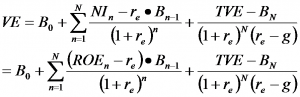

Accounting-Based Valuation Exercises (BAV, Monday, Week 7)
business-analysis-and-valuationyear-twoThe Abnormal Earnings Model = one (sort of weird; non-traditional) way to value firms

-- Should be "the same" as dividend discounting or DCF
-- Maybe better because provides better theory/economics behind price multiples
-- Implementation: less messy than other methods
=====> terminal value is usually a huge component of DCF; not that much better than just using multiples
=====> book value (as a minimum value of future cash flows) captures most of what would be terminal value
{kind=link}
Using accounting-based valuation
-- Price / Earnings => measures what investors will pay for a dollar of earnings today (driven by growth prospects)
-- Price / Book Value => measures (backward-looking) ability to generate sustainable, high ROE => driven by both earnings growth and ROE (firm must be profitable)
-- Higher ROE today means lower P/E, all else being equal ===> turnarounds typically have high P/E ratio: low earnings today compared to what they "should" be
-- High leverage usually means high cost-of-equity (r) => increased possibility of financial distress